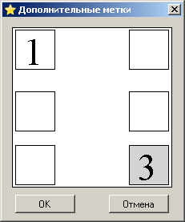

Окно дополнительных меток выглядит вот так:

Вы можете открыть его нажав на Enter или кликнув дважды мышкой по любой доступной для редактирования клетке. В открывшемся окне можно вводить любые цифры в любом месте по общим правилам. После завершения редактирования надо нажать на кнопку "ОК". Окно закроется автоматически и на поле в редактируемой ячейке появятся дополнительные метки на введённых Вами местах. При этом, если в данной клетке была введена цифра - она будет стёрта. Аналогично, если в клетку с дополнительными метками ввести цифру - дополнительные метки будут стёрты. Кроме этого их можно удалить так же, как и обычные цифры: нажав на пробел, Delete или Backspace.